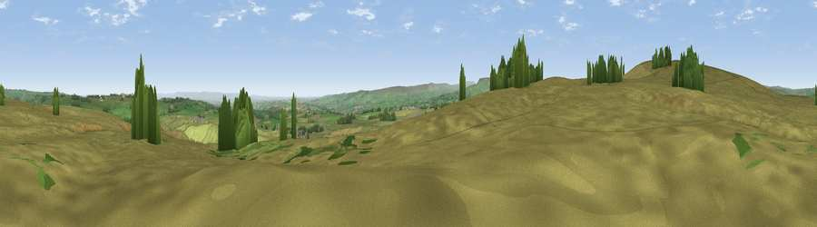

Viewpoint near Bellerby
#18354 in England · top 42% of its area beats it · near BellerbyThe view, rendered

A 360° render of this exact spot computed from the terrain model, tree cover and land cover — summer colours, afternoon light, calibrated against photographs of famous viewpoints. Real trees, hedges and buildings will differ in detail.
The panorama
Grey silhouette: terrain skyline in each direction (720 bearings, Earth curvature and refraction included). Dashed green: skyline with trees (+15 m) and buildings (+8 m) as obstacles. Blue strip: how far the ground is visible on each bearing.
Where the view opens
Wedge length = distance to the farthest visible ground on that bearing (vegetation-aware). Rings at 10, 25 and 50 km.
What fills the view
88% grassland · 6% woodland · 5% cropland
Angular shares of the visible panorama (visual magnitude), not map area. Landscape diversity 0.20 (0–1 Shannon).
Key numbers
More beautiful places nearby
The staircase of upgrades: each row has a higher view potential than everything closer. Driving times are estimates from straight-line distance, calibrated against real road routing — check an actual route before setting out.
| Place | Direction | Drive | Score |
|---|---|---|---|
| Viewpoint near Bellerby | NE · 1 km | ~3 min | 59.4 |
| Whit Fell | WNW · 2 km | ~4 min | 70.7 |
| Viewpoint near West Witton | SSW · 9 km | ~17 min | 75.6 |
| Viewpoint near East Witton | SSE · 10 km | ~19 min | 77.8 |
| Viewpoint near Over Silton | E · 35 km | ~53 min | 78.5 |
| Far Hill Top | E · 36 km | ~54 min | 79.0 |
| Viewpoint near Kirby Knowle | E · 36 km | ~54 min | 80.5 |
| Beacon Hill | E · 36 km | ~55 min | 84.7 |
54.34213, -1.84653 · source: screening · position refined by local search. Computed location — check access rights before visiting.